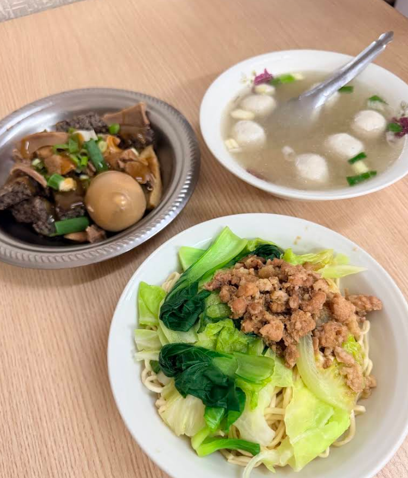
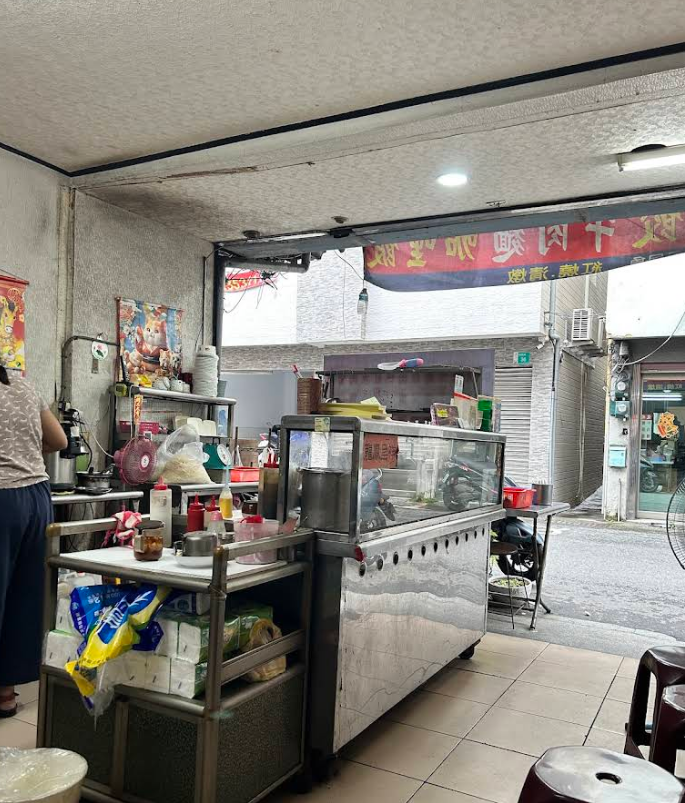
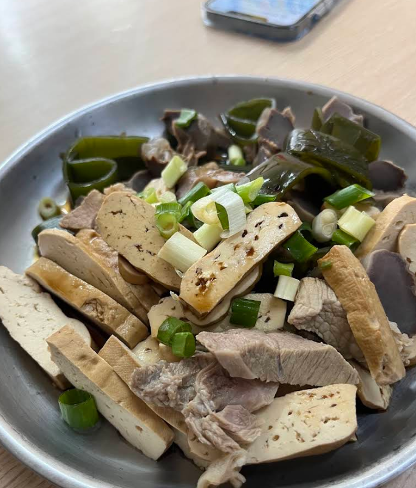
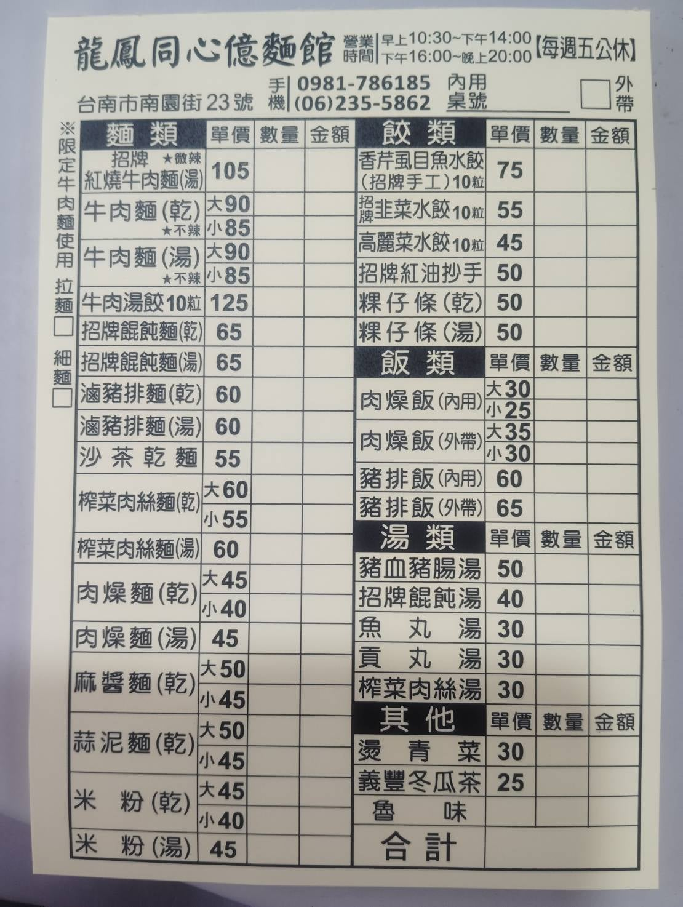

隱身台南巷弄的溫馨麵館，傳承古早味的真誠與感動
「龍鳳同心億麵攤」不僅是一間深受台南在地老饕喜愛的私房小吃，更是一個充滿溫暖與愛心的地方。

獨家配方滷製的豬排，軟嫩入味，搭配吸滿湯汁的麵條，令人回味無窮。

濃郁的芝麻香氣撲鼻而來，醬汁完美包裹每一根麵條，乾麵皆附贈大骨熬製清湯。

網友一致推薦！經過長時間慢火燉煮，滷味極致入味，是搭配麵食的最佳良伴。

台南市北區南園街23號
10:30–14:00 / 16:00–20:00(每週二公休)
價格親民、服務親切，充滿在地人情味